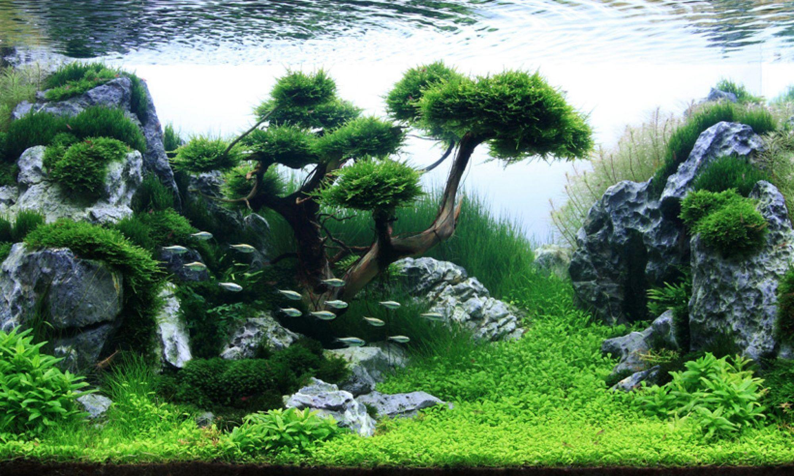

AQUASCAPING
Aquascaping is the craft of arranging aquatic plants, as well as rocks, stones, driftwood, in an
aesthetically pleasing manner within an aquarium. Aquascape designs include a number of distinct styles,
including the garden-like Dutch style and the Japanese-inspired nature style. Aaquascape houses fish as
well as plants, although it is possible to create an aquascape with plants only, or with rockwork or
other hardscape and no plants. Although the primary aim of aquascaping is to create an artful underwater
landscape, the technical aspects of tank maintenance and the growth requirements of aquatic plants are
also taken into consideration.
TYPE OF AQUASCAPING

NATURE AQUARIUM

DUTCH STYLE

IWAGUMI STYLE

BIOTOPE
ON-PREMISE SERVICES
If you have a space where you would like to install an aquascape, we can visit you and provide
consuldations on the
kinds of miniature ecosystems that would match. We also provide aquascape installation services.
WELL TRAINED AQUASCAPERS
Underwaterscapes has experienced aquascapers to realise beautiful & technically sound underwater
garden scapes in aquariums and ponds. Our Underwater garden scapes are inspired from nature; they
are miniature replicas of natural scenery like tropical forests, rive sides, colorful gardens, etc.
PLANT SELECTION AND LAYOUT
We use only carefully screened fish and vegetation, which are suitable for aquascapes.
Underwaterscapes has a wide
variety of plants, and we work with our clients to design an aquascape that meets the desired look
and budget with a
balance for the intended space.
MAINTENANCE
Underwaterscapes has trained staff members who provide maintenance and upkeep of water tanks.
Appropriate maintenance
ensures your aquascape remains beautiful. We also provide long-term regular maintenance service.
Pricing
| Services |
Duration |
price |
| ON-PREMISE SERVICES |
Instant |
$150 |
| PLANT SELECTION AND LAYOUT |
1 Month |
$300 |
| MAINTENANCE |
2-3 Day |
$100 |